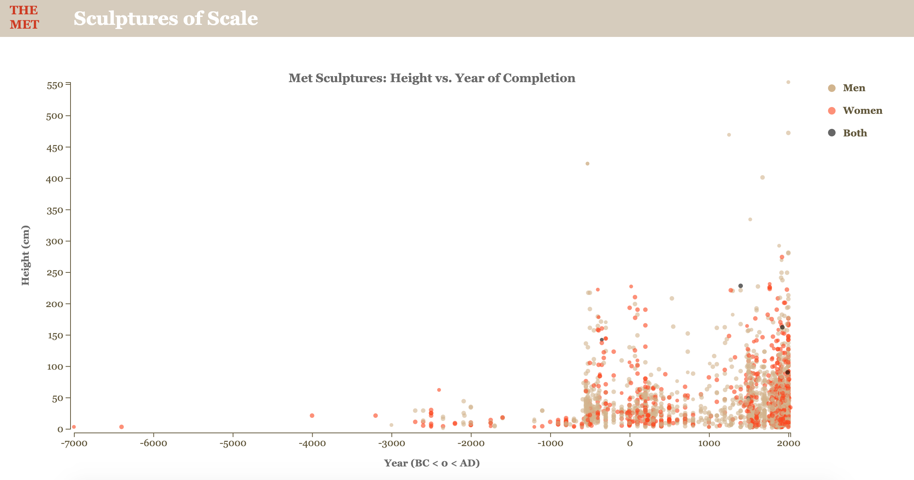
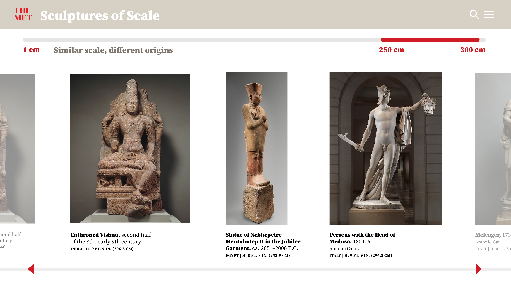
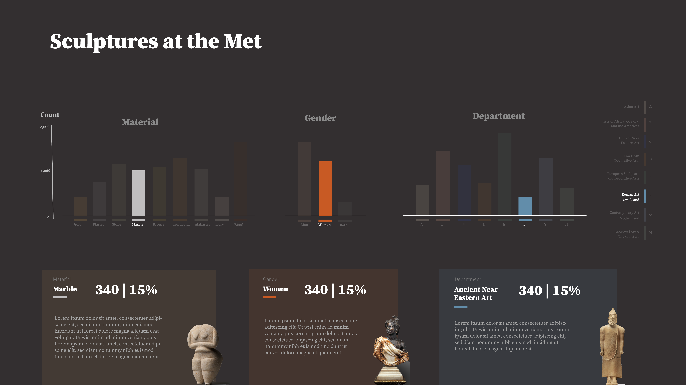
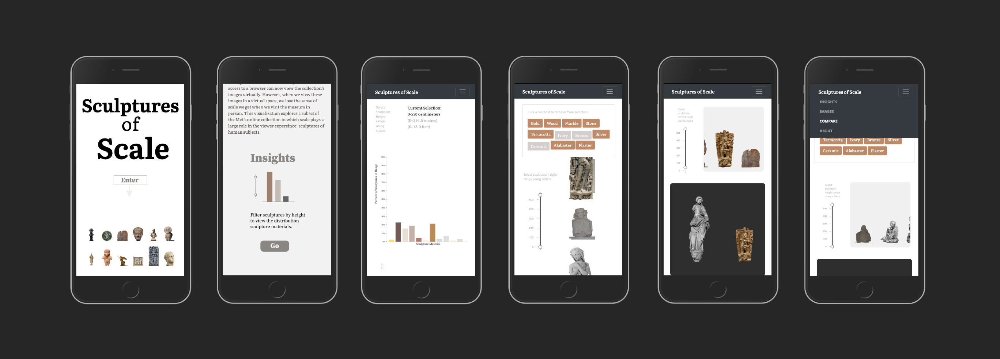

The Metropolitan Museum of Art has made nearly 500,000 pieces of art publicly available through its online collection. Anyone with access to a browser can now view the collection’s images virtually. However, when we view these images in a virtual space, we lose the sense of scale we get when we visit the museum in person. This visualization explores a subset of the Met’s online collection in which scale plays a large role in the viewer experience: sculptures of human subjects.
This visualization was created as part of the Masters in Data Visualization Major Studio 1 course at Parsons School of Design. Data and images are sourced from the Met API. Over the course of the Fall 2019 semester, I worked with the Met's open access data to explore the concept of scale in virtual space. The visualizations focus on sculptures of human subjects, and explore various ways of depicting relative scale. The semester was broken into four units: 1. Quantitative Data, 2. Qualitative data, 3. Interactivity, and 4. New Contexts.
1. Quantitative Visualization: Gender and Height in the Met's Online Sculpture Collection

2. Qualitative Visualization: Sculptures of Scale Iteration One

3. Interactivity: Sculptures of Scale Iteration Two

4. New Contexts: Sculptures of Scale Final



4. New Contexts: Sculptures of Scale Iteration Mobile Version
